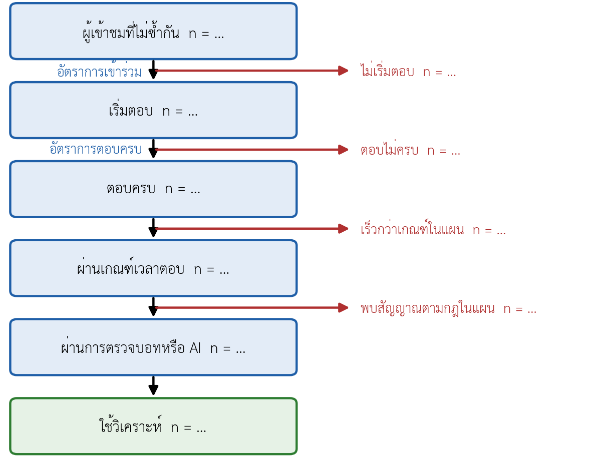
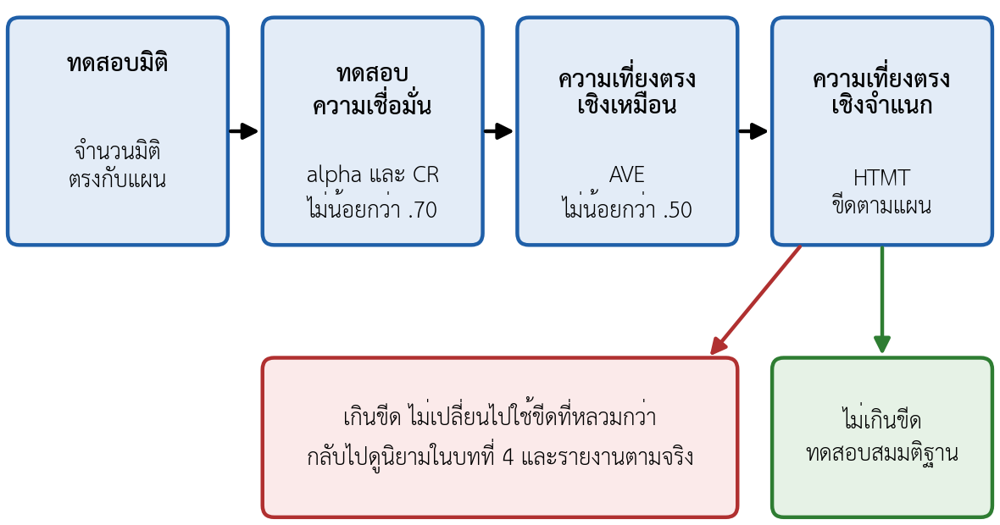

บทที่ 7 ทดลองใช้ เก็บข้อมูลจริง และตรวจโมเดลการวัด
เมื่อศึกษาบทนี้จบแล้ว นิสิตสามารถ
- จัดทำรายงานผลทดลองใช้ที่ครอบคลุมทั้งข้อคำถามและระบบเก็บข้อมูลได้
- จัดทำบันทึกการตัดผู้ตอบที่แสดงจำนวนก่อนและหลังแต่ละเกณฑ์ตามแผนลงทะเบียนได้
- อธิบายว่าเหตุใดการตัดรายที่ข้อมูลไม่ครบและการแทนด้วยค่าเฉลี่ยจึงให้ผลเอนเอียงได้
- ตรวจความเที่ยงตรงเชิงจำแนกด้วย HTMT ตามค่าขีดที่กำหนดไว้ก่อนได้
- จัดทำรายงานโมเดลการวัดและรายการตรวจ CHERRIES ของงานตนเองได้ (ใบงานที่ 7)
ความนำ
บทที่ 3 ถึงบทที่ 6 เป็นการตัดสินใจก่อนเห็นข้อมูล บทนี้เป็นบทแรกที่นิสิตแทร็กข้อมูลปฐมภูมิได้ข้อมูลจริง และเป็นบทที่การตัดสินใจล่วงหน้าเหล่านั้นถูกนำมาใช้ เกณฑ์ตัดผู้ตอบ วิธีจัดการข้อมูลสูญหาย และค่าขีดของความเที่ยงตรงเชิงจำแนก ล้วนต้องเขียนไว้ในแผนลงทะเบียนแล้ว บทนี้จึงไม่ได้ถามว่าจะตัดสินอย่างไร แต่ถามว่าทำตามแผนอย่างไร และบันทึกอย่างไรเมื่อต้องเบี่ยงจากแผน
บทนี้มีสามช่วง ช่วงแรกคือการทดลองใช้เครื่องมือก่อนเก็บจริง ช่วงที่สองคือการเก็บจริงและทำความสะอาดข้อมูล ซึ่งรวมการตรวจคำตอบจากบอทหรือ AI ตามที่เตรียมไว้ในบทที่ 5 และการจัดการข้อมูลสูญหาย ช่วงที่สามคือการตรวจโมเดลการวัด (measurement model) ก่อนทดสอบสมมติฐาน ลำดับนี้สำคัญ ถ้ามาตรวัดไม่ได้วัดสิ่งที่ตั้งใจ ผลการทดสอบสมมติฐานก็ตีความไม่ได้
นิสิตแทร็กข้อมูลทุติยภูมิไม่ต้องทำใบงานบทนี้ แต่ควรอ่านหัวข้อ 7.4 เรื่องข้อมูลสูญหาย เพราะจะใช้ในบทที่ 8 และบทที่ 9
7.1 การทดลองใช้เครื่องมือ
การทดสอบคำถามก่อนใช้ (pre-testing) เป็นขั้นที่ 3 ของการพัฒนามาตรวัด มีเป้าหมายให้คำถามและตัวเลือกคำตอบมีความหมายต่อผู้ตอบ (Boateng et al., 2018, p. 3 ตาราง 1) ขั้นนี้ยังต้องทำแม้ใช้มาตรวัดที่มีอยู่และแปลแล้วตามบทที่ 4 เพราะฉบับแปลยังไม่เคยถูกตอบโดยผู้ตอบในบริบทของนิสิต
ผู้เขียนเสนอให้การทดลองใช้ (pilot) ตรวจสองเรื่องพร้อมกัน เรื่องแรกคือข้อคำถาม ผู้ตอบเข้าใจตรงกับที่ผู้วิจัยตั้งใจหรือไม่ เรื่องที่สองคือระบบ การตั้งค่าตามตารางที่ 5.2 ทำงานจริงหรือไม่ เช่น ไฟล์ที่ส่งออกมีเวลาตอบและข้อมูลอุปกรณ์ครบหรือไม่ ลิงก์เฉพาะรายใช้ได้หรือไม่ ผลทั้งสองเรื่องเขียนเป็นรายงานผลทดลองใช้ที่มีจำนวนผู้ตอบ ปัญหาที่พบ ข้อที่ปรับ และเวลาที่ใช้ตอบ เวลาที่ใช้ตอบในการทดลองใช้ช่วยตรวจว่าเกณฑ์เวลาในแผนลงทะเบียนสมเหตุสมผลหรือไม่ ถ้าต้องปรับเกณฑ์ ให้ปรับก่อนเก็บจริงและบันทึกในบันทึกการแก้แผน
ผู้ตอบในการทดลองใช้ควรมาจากประชากรเดียวกับกลุ่มตัวอย่างจริง แต่ไม่ใช่คนที่จะได้รับเชิญในการเก็บจริง นิสิตอาจใช้แบบจำลองภาษาขนาดใหญ่ช่วยหาข้อคำถามที่กำกวมก่อนทดลองใช้ได้ แต่ผู้เขียนเสนอว่าผลนั้นไม่นับเป็นผลทดลองใช้ เพราะคำตอบจากแบบจำลองไม่ใช่คำตอบของประชากรเป้าหมาย บทที่ 10 จะกล่าวถึงหลักฐานเรื่องนี้
สำหรับการวิเคราะห์รายข้อ Boateng และคณะ (2018, p. 10) ถือว่าสหสัมพันธ์ระหว่างข้อ และสหสัมพันธ์ระหว่างข้อกับคะแนนรวมที่ปรับแล้ว (adjusted item-total correlation) ที่ต่ำกว่า 0.30 ไม่พึงประสงค์ ข้อนั้นอาจเป็นข้อที่ควรพิจารณาตัด ส่วนความเชื่อมั่น ค่า Cronbach's alpha 0.70 มักถือเป็นเกณฑ์ที่ยอมรับได้ (Boateng et al., 2018, p. 13) ผู้เขียนเสนอให้ใช้ค่าเหล่านี้หาข้อที่ต้องตรวจซ้ำร่วมกับความเห็นของผู้ตอบ ไม่ตัดข้อจากตัวเลขของผลทดลองใช้อย่างเดียว
7.2 การเก็บจริงและบันทึกการตัดผู้ตอบ
CHERRIES กำหนดให้รายงานอัตราการเข้าชม (view rate) อัตราการเข้าร่วม (participation rate) และอัตราการตอบครบ (completion rate) โดยนิยามจากผู้เข้าชมที่ไม่ซ้ำกัน (Eysenbach, 2004, ตารางรายการตรวจ หมวดอัตราการตอบ) และให้ระบุการจัดการแบบสอบถามที่ตอบไม่ครบ เกณฑ์ตัดผู้ตอบที่ใช้เวลาน้อยผิดปกติ และวิธีกำหนดเกณฑ์นั้น (Eysenbach, 2004, ตารางรายการตรวจ หมวดการวิเคราะห์)
ผู้เขียนเสนอให้นิสิตบันทึกการตัดผู้ตอบเป็นลำดับขั้นตามภาพที่ 7.1 แต่ละขั้นมีจำนวนก่อนและหลัง และเกณฑ์ที่ใช้ต้องตรงกับแผนลงทะเบียนข้อ 4 จากบทที่ 3 การบันทึกแบบนี้ตอบคำถามที่ผู้อ่านมักถาม คือขนาดตัวอย่างสุดท้ายมาจากไหน และเกณฑ์แต่ละข้อตัดไปกี่คน

ที่มา ผู้เขียนเสนอ อัตราที่ต้องรายงานจาก Eysenbach (2004, ตารางรายการตรวจ)
ถ้าคำตอบชุดหนึ่งเข้าเกณฑ์ตัดหลายข้อ ให้นับในขั้นแรกที่ถูกตัด และเขียนลำดับขั้นไว้ในแผน เพราะลำดับขั้นเปลี่ยนจำนวนที่แต่ละเกณฑ์ตัดได้ ถ้าพบกรณีที่แผนไม่ได้คาดไว้ ให้ตัดสินตามหลักเดียวกับแผน บันทึกในบันทึกการแก้แผนว่าเบี่ยงอย่างไรและเพราะอะไร และรายงานผลทั้งแบบตัดและไม่ตัดกรณีนั้น
7.3 การตรวจคำตอบจากบอทหรือ AI
บทที่ 5 แสดงว่าคำถามตรวจความตั้งใจไม่พอ และให้นิสิตตั้งระบบเก็บข้อมูลที่ต้องใช้ตรวจไว้ก่อนเปิดแบบสอบถาม บทนี้ใช้ข้อมูลเหล่านั้น ตารางที่ 7.1 สรุปสัญญาณที่ใช้ตรวจ
ตารางที่ 7.1 สัญญาณที่ใช้ตรวจคำตอบจากบอทหรือ AI
| สัญญาณ | สิ่งที่ตรวจ | แหล่ง |
|---|---|---|
| ข้อมูลอุปกรณ์ | IP ของศูนย์ข้อมูล user agent ที่ซ้ำกัน | Martherus et al. (2025, pp. 5–7) |
| การคัดลอกวาง | ข้อความในช่องปลายเปิดที่วางมาแทนการพิมพ์ | Martherus et al. (2025, pp. 5–7) |
| รูปแบบคำตอบ | คำตอบกระจุกที่ค่าที่พบบ่อยไม่กี่ค่า เช่น ในการทดลอง รหัสไปรษณีย์ที่เอเจนต์ตอบเกินร้อยละ 80 เป็นค่าที่รู้จักกันไม่กี่ค่า | Martherus et al. (2025, p. 6) |
| เวลาตอบ | เร็วผิดปกติตามเกณฑ์ในแผน | Eysenbach (2004, ตารางรายการตรวจ หมวดการวิเคราะห์) |
| ช่องปลายเปิด | ข้อความคล้ายกันผิดปกติข้ามผู้ตอบ | ผู้เขียนเสนอ |
ที่มา ผู้เขียนสรุปจากแหล่งในตาราง
งานของ Martherus และคณะไม่มีกลุ่มมนุษย์เปรียบเทียบ (Martherus et al., 2025, pp. 7–8) สัญญาณในตารางจึงยังไม่มีเกณฑ์ตัวเลขที่บอกได้ว่าคำตอบชุดใดเป็นบอทแน่นอน และผู้ตอบสังเคราะห์บางแบบหลบวิธีตรวจส่วนใหญ่ได้ (Westwood, 2025, บทคัดย่อ) ผู้เขียนเสนอให้ใช้หลายสัญญาณร่วมกัน เขียนกฎการตัดสินไว้ในแผนก่อนเก็บ เช่น ตัดเมื่อพบสัญญาณอย่างน้อยสองแบบ และรายงานผลทั้งแบบตัดและไม่ตัดคำตอบที่น่าสงสัย นิสิตปริญญาเอกควรวิเคราะห์ความไวของผลต่อกฎนี้ CHERRIES ออกแบบในปี 2004 จึงไม่ได้ครอบคลุมภัยจากเอเจนต์ AI ผู้เขียนเสนอให้รายงานผลตรวจในหัวข้อนี้เพิ่มจากรายการตรวจ
7.4 ข้อมูลสูญหาย
ข้อมูลสูญหาย (missing data) เกิดได้เกือบทุกงาน คำถามสำคัญคือข้อมูลสูญหายด้วยกลไกใด Schafer และ Graham (2002) แยกกลไกเป็นสามแบบ ได้แก่ สูญหายแบบสุ่มโดยสมบูรณ์ (missing completely at random หรือ MCAR) สูญหายแบบสุ่ม (missing at random หรือ MAR) และสูญหายแบบไม่สุ่ม (missing not at random หรือ MNAR) ผลต่อวิธีจัดการสรุปได้ตามตารางที่ 7.2
ตารางที่ 7.2 วิธีจัดการข้อมูลสูญหายและหลักฐาน
| วิธี | หลักฐาน | แหล่ง |
|---|---|---|
| ตัดรายที่ข้อมูลไม่ครบ (listwise deletion) | ใช้ได้ทั่วไปเฉพาะเมื่อสูญหายแบบ MCAR | Schafer and Graham (2002, p. 155) |
| ตัดรายที่ข้อมูลไม่ครบ | การจำลองพบว่าเอนเอียงและช่วงความเชื่อมั่นครอบคลุมต่ำเมื่อสูญหายแบบ MAR หรือ MNAR | Schafer and Graham (2002, pp. 156–157 ตาราง 2) |
| แทนด้วยค่าเฉลี่ย (mean substitution) | เมื่อสูญหายร้อยละ 25 ช่วงความเชื่อมั่นครอบคลุมประมาณร้อยละ 86 | Schafer and Graham (2002, p. 159) |
| ภาวะน่าจะเป็นสูงสุด (maximum likelihood หรือ ML) และการแทนค่าพหุ (multiple imputation หรือ MI) | แนวปฏิบัติที่ดีที่สุดในทางปฏิบัติภายใต้ข้อตกลง MAR | Schafer and Graham (2002, pp. 147, 173) |
ที่มา ผู้เขียนสรุปจาก Schafer and Graham (2002)
ข้อควรระวังคือบทความนี้ไม่ได้กำหนดเกณฑ์ร้อยละที่ตัดรายได้ การตัดรายยอมรับได้เมื่อตัดเพียงส่วนน้อยและรายที่ตัดไม่มีอิทธิพลมาก (Schafer & Graham, 2002, p. 156) นิสิตจึงไม่ควรอ้างบทความนี้ว่ากำหนดเกณฑ์ร้อยละใดไว้
ผู้เขียนเสนอให้นิสิตทำบันทึกข้อมูลสูญหายที่มีสี่ช่อง คือ ตัวแปร จำนวนที่สูญหาย รูปแบบ และวิธีจัดการ ช่องรูปแบบให้ดูว่าข้อมูลสูญหายกระจุกที่ข้อใดหรือกลุ่มใด ถ้าข้อหนึ่งสูญหายมากกว่าข้ออื่นชัดเจน อาจเป็นสัญญาณว่าข้อนั้นมีปัญหาที่การทดลองใช้ไม่พบ เช่น ผู้ตอบไม่อยากตอบหรือไม่เข้าใจ ข้อมูลสูญหายแบบนี้อาจไม่สุ่ม และการตัดรายจะเอนเอียง ข้อผิดพลาดที่ต้องระวังอีกข้อคือการนับข้อมูลสูญหายเป็นศูนย์ เช่น ช่องว่างในข้อคำถามมาตรประมาณค่าที่ถูกแปลงเป็น 0 เมื่อส่งออกไฟล์
7.5 การตรวจโมเดลการวัดก่อนทดสอบสมมติฐาน
ระยะประเมินมาตรวัดมีสามขั้น คือ ทดสอบมิติ ทดสอบความเชื่อมั่น และทดสอบความเที่ยงตรง (Boateng et al., 2018, p. 4 ตาราง 1) นิสิตต้องทำทั้งสามขั้นกับข้อมูลจริงก่อนดูผลของสมมติฐาน ตามที่บทที่ 4 ให้เหตุผลไว้ว่าหลักฐานจากต้นฉบับใช้แทนไม่ได้ทั้งหมด Hair และ Alamer (2022) เสนอเกณฑ์สำหรับโมเดลการวัดแบบสะท้อนดังนี้
- น้ำหนักองค์ประกอบ (loading) ประมาณ .70 ขึ้นไป (p. 6)
- Cronbach's alpha และความเชื่อมั่นเชิงประกอบ (composite reliability หรือ CR) ไม่น้อยกว่า .70 แต่ค่าตั้งแต่ .95 ขึ้นไปบ่งว่าข้อคำถามซ้ำกัน (p. 6)
- ค่าเฉลี่ยความแปรปรวนที่สกัดได้ (average variance extracted หรือ AVE) ไม่น้อยกว่า .50 สำหรับความเที่ยงตรงเชิงเหมือน (p. 7)
7.5.1 ความเที่ยงตรงเชิงจำแนก
ความเที่ยงตรงเชิงจำแนก (discriminant validity) คือหลักฐานว่าแนวคิดสองแนวคิดที่วัดแยกกันเป็นคนละเรื่องจริง Henseler และคณะ (2015, pp. 115, 120) แสดงว่าเกณฑ์ Fornell-Larcker และการดู cross-loadings ไวไม่พอที่จะตรวจพบการขาดความเที่ยงตรงเชิงจำแนก และเสนอ HTMT (heterotrait-monotrait ratio) แทน HTMT ใช้ได้สองแบบ แบบแรกเทียบกับค่าขีดที่กำหนดไว้ก่อน แบบที่สองทดสอบด้วยช่วงความเชื่อมั่น bootstrap (Henseler et al., 2015, pp. 121–122) ค่าขีดที่มีผู้เสนอมีสองค่า คือ 0.85 และ 0.90 (Henseler et al., 2015, p. 121)
ผู้เขียนเสนอให้นิสิตเลือกค่าขีดและเขียนเหตุผลไว้ในแผนลงทะเบียนก่อนวิเคราะห์ เพราะถ้าเลือกหลังเห็นค่า HTMT ทางเลือกนี้จะกลายเป็นความยืดหยุ่นของผู้วิจัยตามบทที่ 3 ถ้าค่าเกินขีดที่เลือก ไม่ควรเปลี่ยนไปใช้ขีดที่หลวมกว่า ทางเลือกที่ทำได้คือกลับไปดูนิยามของสองแนวคิดในบทที่ 4 ว่าซ้อนกันหรือไม่ ดูข้อคำถามที่อาจวัดทั้งสองแนวคิด และรายงานผลตามจริงพร้อมข้อจำกัด
ภาพที่ 7.2 สรุปลำดับการตรวจในหัวข้อนี้ และทางที่นิสิตต้องเลือกเมื่อค่า HTMT เกินขีด

ที่มา ผู้เขียนเสนอ ลำดับขั้นจาก Boateng et al. (2018, p. 4) เกณฑ์ความเชื่อมั่นและ AVE จาก Hair และ Alamer (2022, pp. 6–7) และ HTMT จาก Henseler et al. (2015)
7.5.2 ความลำเอียงจากวิธีวัดร่วมในขั้นวิเคราะห์
Podsakoff และคณะ (2024) ระบุว่าการทดสอบปัจจัยเดียวของ Harman (Harman's single-factor test) เป็นเพียงการวินิจฉัย ไม่ใช่วิธีควบคุมความลำเอียง นิสิตที่รายงานว่าผ่านการทดสอบนี้จึงยังไม่ได้แสดงว่าผลปลอดจากความลำเอียงจากวิธีวัดร่วม วิธีป้องกันหลักอยู่ในขั้นออกแบบตามบทที่ 5 การตรวจในขั้นนี้ควรทำตามที่เขียนไว้ในแผนเท่านั้น
7.6 การรายงานตามแนวปฏิบัติ
Hoyle และ Isherwood (2013) เสนอสิ่งที่ต้องรายงานเมื่อใช้ SEM ตารางที่ 7.3 สรุปสิ่งที่นิสิตต้องเตรียมตั้งแต่ขั้นตรวจโมเดลการวัด
ตารางที่ 7.3 สิ่งที่ต้องรายงานเมื่อใช้ SEM
| หัวข้อ | สิ่งที่ต้องรายงาน | แหล่ง |
|---|---|---|
| การระบุแบบจำลอง | ละเอียดพอให้คำนวณองศาอิสระได้ และอธิบายการระบุค่าได้ (identification) | Hoyle and Isherwood (2013, หัวข้อ Specification) |
| การประมาณค่า | โปรแกรมพร้อมรุ่น วิธีประมาณค่าและเหตุผล การจัดการข้อมูลไม่ปกติ และข้อมูลนำเข้า | Hoyle and Isherwood (2013, หัวข้อ Estimation) |
| ความกลมกลืน | ดัชนีความกลมกลืนอย่างน้อยสองกลุ่ม ตีความด้วยเกณฑ์ที่อ้างหลักฐานล่าสุด | Hoyle and Isherwood (2013, หัวข้อ Evaluation of fit) |
| ค่าประมาณ | ค่าประมาณของพารามิเตอร์ทุกตัว ระบุว่าเป็นค่ามาตรฐานหรือไม่ พร้อมความคลาดเคลื่อนมาตรฐาน | Hoyle and Isherwood (2013, หัวข้อ Parameter estimates) |
| การปรับแบบจำลอง | จำนวนครั้งและเหตุผลเชิงแนวคิด แยกเป็นส่วนเชิงสำรวจ | Hoyle and Isherwood (2013, หัวข้อ Respecification) |
ที่มา ผู้เขียนสรุปจาก Hoyle and Isherwood (2013)
แถวสุดท้ายเชื่อมกับบทที่ 3 การปรับแบบจำลองหลังเห็นผลเป็นการวิเคราะห์เชิงสำรวจ ต้องรายงานแยกจากการวิเคราะห์เชิงยืนยันที่ลงทะเบียนไว้ ส่วนรายการตรวจ CHERRIES มีแปดหมวด ได้แก่ แบบการวิจัย จริยธรรมและการคุ้มครองข้อมูล การพัฒนาและทดสอบ การรับสมัคร การบริหารแบบสอบถาม อัตราการตอบ การป้องกันการตอบซ้ำ และการวิเคราะห์ (Eysenbach, 2004, ตารางรายการตรวจ) ผลของบทที่ 5 ถึงบทที่ 7 ตอบหมวดเหล่านี้ได้เกือบทั้งหมด
7.7 ข้อผิดพลาดที่พบบ่อย
ตารางที่ 7.4 ข้อผิดพลาดที่พบบ่อยและวิธีแก้
| ข้อผิดพลาด | ตัวอย่าง | วิธีแก้ |
|---|---|---|
| ทดลองใช้เฉพาะข้อคำถาม ไม่ทดสอบระบบ | เก็บจริงแล้วพบว่าไม่มีเวลาตอบในไฟล์ | ตรวจไฟล์ส่งออกในการทดลองใช้ |
| กำหนดเกณฑ์ตัดผู้ตอบหลังเห็นผล | เลือกเกณฑ์เวลาที่ทำให้ผลชัดขึ้น | ใช้เกณฑ์ในแผนลงทะเบียน และบันทึกการเบี่ยงจากแผน |
| ไม่รายงานจำนวนที่แต่ละเกณฑ์ตัด | รายงานเพียงขนาดตัวอย่างสุดท้าย | บันทึกตามภาพที่ 7.1 |
| นับข้อมูลสูญหายเป็นศูนย์ | ช่องว่างถูกแปลงเป็น 0 ตอนส่งออก | ตรวจรหัสค่าสูญหายในคู่มือรหัสข้อมูล |
| แทนข้อมูลสูญหายด้วยค่าเฉลี่ย | เติมค่าเฉลี่ยของข้อให้ทุกช่องว่าง | ใช้ ML หรือ MI (Schafer & Graham, 2002, pp. 159, 173) |
| ใช้ Fornell-Larcker อย่างเดียวตัดสินความเที่ยงตรงเชิงจำแนก | ผ่านเกณฑ์เดียวแล้วสรุปว่าผ่าน | ใช้ HTMT (Henseler et al., 2015, p. 120) |
| ใช้การทดสอบของ Harman เป็นหลักฐานว่าไม่มีความลำเอียง | เขียนว่าปัจจัยแรกอธิบายไม่ถึงครึ่ง จึงไม่มีปัญหา | รายงานเป็นการวินิจฉัย และอ้างการออกแบบ (Podsakoff et al., 2024) |
| ทดสอบสมมติฐานก่อนตรวจโมเดลการวัด | ดูค่าเส้นทางก่อน แล้วจึงตัดข้อคำถาม | ตรวจโมเดลการวัดให้เสร็จก่อน |
| รายงานเฉพาะค่าประมาณที่มีนัยสำคัญ | ตารางแสดงเฉพาะเส้นทางที่มีดาว | รายงานพารามิเตอร์ทุกตัว (Hoyle & Isherwood, 2013, หัวข้อ Parameter estimates) |
ปริมทดลองใช้แบบสอบถามกับพนักงาน 30 คนนอกกลุ่มตัวอย่างจริง พบว่าผู้ตอบหลายคนเข้าใจคำว่า "เครื่องมือ AI" ต่างกัน เมื่อเก็บจริงได้คำตอบ 342 ชุด มี 18 ชุดที่ใช้เวลาตอบน้อยกว่าเกณฑ์ที่ปริมเขียนไว้ในแผนลงทะเบียน และมีคำตอบ 11 ชุดที่มาจากที่อยู่ IP เดียวกันของศูนย์ข้อมูล และตอบช่องปลายเปิดด้วยข้อความคล้ายกันมาก
ข้อคำถามเรื่องภาระงานที่รับรู้มีข้อมูลสูญหายมากกว่าข้ออื่น และค่า HTMT ระหว่างความผูกพันในงานกับความพึงพอใจในงานสูงกว่าค่าขีดที่ปริมเลือกไว้ในแผน
คำถามชวนคิด ปริมควรทำอะไรกับผลการทดลองใช้ก่อนเก็บจริง ควรบันทึกการตัดผู้ตอบ 18 ชุดและ 11 ชุดอย่างไร ข้อมูลสูญหายที่กระจุกในข้อภาระงานที่รับรู้บอกอะไร และควรทำอย่างไรกับค่า HTMT ที่เกินขีด
เมื่อศึกษาบทนี้แล้ว นิสิตสามารถจัดทำรายงานผลทดลองใช้ที่ตรวจทั้งข้อคำถามและระบบ และใช้ผลนั้นปรับเครื่องมือก่อนเก็บจริง นิสิตบันทึกการตัดผู้ตอบเป็นลำดับขั้นพร้อมจำนวนก่อนและหลัง ตรวจคำตอบจากบอทหรือ AI ด้วยหลายสัญญาณ และรายงานผลทั้งแบบตัดและไม่ตัดคำตอบที่น่าสงสัย
นิสิตสามารถอธิบายว่าการตัดรายที่ข้อมูลไม่ครบใช้ได้ทั่วไปเฉพาะเมื่อข้อมูลสูญหายแบบสุ่มโดยสมบูรณ์ และการแทนด้วยค่าเฉลี่ยทำให้ช่วงความเชื่อมั่นครอบคลุมค่าจริงได้น้อยกว่าที่ควร นิสิตตรวจโมเดลการวัดก่อนทดสอบสมมติฐาน ใช้ HTMT กับค่าขีดที่กำหนดไว้ก่อน และรู้ว่าการทดสอบของ Harman เป็นเพียงการวินิจฉัย
ผลของใบงานที่ 7 คือข้อมูลที่พร้อมทดสอบสมมติฐานตามแผนลงทะเบียน พร้อมบันทึกที่ผู้อ่านตรวจย้อนได้ บทที่ 8 และบทที่ 9 เป็นแทร็กของนิสิตที่ใช้ข้อมูลทุติยภูมิ นิสิตแทร็กข้อมูลปฐมภูมิควรอ่านหัวข้อ 9.2 เรื่องโค้ดที่ทำซ้ำได้และหัวข้อ 9.3 เรื่องความทนทาน เพราะใช้กับงานของตนเช่นกัน แล้วต่อด้วยบทที่ 10
- การทดสอบคำถามก่อนใช้ (pre-testing)
- การทดลองใช้ (pilot)
- อัตราการเข้าชม (view rate)
- อัตราการเข้าร่วม (participation rate)
- อัตราการตอบครบ (completion rate)
- ข้อมูลสูญหาย (missing data)
- สูญหายแบบสุ่มโดยสมบูรณ์ (MCAR)
- สูญหายแบบสุ่ม (MAR)
- การแทนค่าพหุ (multiple imputation)
- โมเดลการวัด (measurement model)
- ความเที่ยงตรงเชิงจำแนก (discriminant validity)
- HTMT (heterotrait-monotrait ratio)
คำถามทบทวน
- จงอธิบายว่าการทดลองใช้ควรตรวจอะไรบ้างนอกจากความเข้าใจข้อคำถาม และยกตัวอย่างปัญหาที่จะพบได้เฉพาะเมื่อตรวจระบบ
- ได้แบบสอบถามคืนมา 342 ชุด และรายงานในบทที่ 4 ของวิทยานิพนธ์ว่ากลุ่มตัวอย่างมี 313 คน ผู้อ่านจะถามอะไร และนิสิตต้องมีบันทึกอะไรจึงตอบได้
- นิสิตคนหนึ่งเติมค่าเฉลี่ยให้ทุกช่องที่สูญหาย เพราะต้องการเก็บผู้ตอบไว้ให้มากที่สุด จงประเมินด้วยหลักฐานในหัวข้อ 7.4 และเสนอทางเลือก
- ค่า HTMT ของแนวคิดคู่หนึ่งเท่ากับ 0.88 นิสิตเขียนในแผนว่าใช้ค่าขีด 0.85 จงอธิบายว่านิสิตควรทำอะไร และไม่ควรทำอะไร
- นิสิตเขียนว่า "ผลการทดสอบปัจจัยเดียวของ Harman แสดงว่างานนี้ไม่มีความลำเอียงจากวิธีวัดร่วม" จงประเมินข้อความนี้ และเขียนข้อความที่ถูกต้องแทน
ใบงานที่ 7 รายงานการเก็บข้อมูลและโมเดลการวัด
ให้นิสิตแทร็กข้อมูลปฐมภูมิจัดทำเอกสารสำหรับโครงการวิจัยของตนเอง ถ้ายังเก็บจริงไม่เสร็จ ให้ทำข้อ 1 ก่อน แล้วทำข้อ 2 ถึง 6 เมื่อเก็บเสร็จ
- รายงานผลทดลองใช้ จำนวนผู้ตอบ ปัญหาที่พบทั้งข้อคำถามและระบบ ข้อที่ปรับ และเวลาที่ใช้ตอบ
- บันทึกการตัดผู้ตอบตามภาพที่ 7.1 พร้อมอัตราที่ CHERRIES กำหนด และเกณฑ์ที่ตรงกับแผนลงทะเบียน
- ผลตรวจคำตอบจากบอทหรือ AI ตามตารางที่ 7.1 กฎการตัดสิน และผลแบบตัดและไม่ตัด
- คู่มือรหัสข้อมูล และบันทึกข้อมูลสูญหายสี่ช่อง พร้อมวิธีจัดการและเหตุผล
- ตารางโมเดลการวัด ความเชื่อมั่น ความเที่ยงตรงเชิงเหมือน และ HTMT เทียบกับค่าขีดในแผน
- รายการตรวจ CHERRIES ที่กรอกแล้ว และบันทึกการแก้แผนทุกครั้งที่เบี่ยงจากแผน
เอกสารอ้างอิง
วราวุฒิ นาคบุญนำ. (2569). บทที่ 7 ทดลองใช้ เก็บข้อมูลจริง และตรวจโมเดลการวัด. ใน เริ่มต้นทำวิจัย จากคำถามถึงชุดข้อมูลที่วิเคราะห์ได้. คณะการบัญชีและการจัดการ มหาวิทยาลัยมหาสารคาม. https://aj-warawut.github.io/academic-web-teaching/rs_lesson_07.html